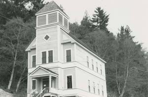
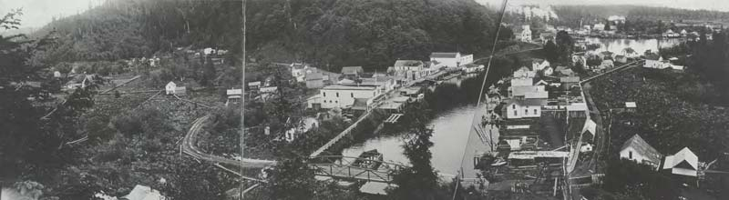
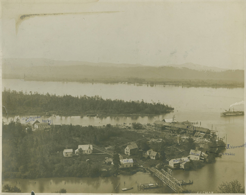
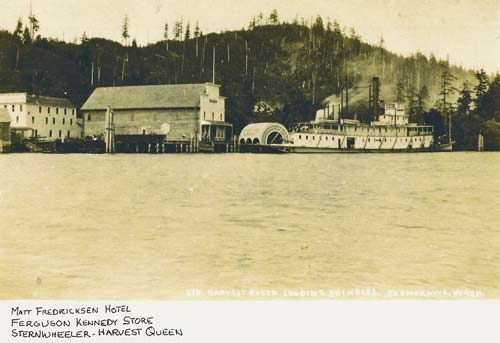

Skamokawa school.
Built in 1926. It served the area until Cathlamet and Skamokawa consolidated in 1967. Skamokawa school was torn down in 1974. It was situated at the North end of the park against what was once known as Moe Hill.
Redmen Hall, still standing above SR4, was the original Skamokawa school. It was built in 1894 and used as a school until 1926 when it became the meeting place of the Redmen, a fraternal order active in Skamokawa since 1902,

Photos courtesy of Wahkiakum County Heritage
Creators Unknown

1914 panorama of Skamokawa from Moe Hill.
Creator: Unknown
Photos Courtesy of Wahkiakum County Heritage.

Brooks Slough, Price Island, Steamboat Slough and the Columbia River.
The bridge crosses Brooks Slough to Steamboat Landing. Upward from there is Steamboat Slough then Price Island and the Columbia River above.
Creator Unknown
Courtesy Wahkiakum County Heritage
The picture was taken between 1888 and 1920.

Matt Fredrickson Hotel and the Ferguson Kennedy Store.
Stern wheeler: Harvest Queen is Loading shingles.
Courtesy Irene: Martin
Creator: Unknown
Date: Unknown.